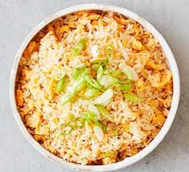

Egg Fried Rice

Description
Rice cooked with egg and spring onion to garnish
Ingredients
- Rice
- Eggs
- Onion
- Spring Onion
Steps
- Use leftover rice or rice cooked earlier and left to dry
- Heat oil in a wok and then add the onions and fry until lightly browned
- Add the rice to the wok and fry for a few minutes
- Make a well in the middle and add the egg mixture
- Leave the egg to cook for a little bit then mix in with the rice
- Serve in a bowl
- Add the spring onion at the end